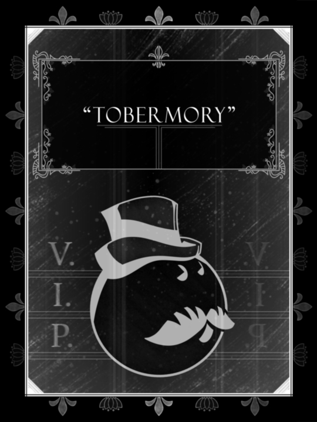

Our collection is full of wacky styles. From comic halftones to old film grain, we try to give something new to every ball. See the full collection!
Legendary poster designs, inspired by a legendary bowling league.
Wanna see what's in the works? Or perhaps request a poster for your own ball? Right this way!
About Us
Hey everyone, my name is Burke! If it wasn't apparent, my friends and I are very invested in bowling. We bowled casually until the summer of 2023, when four of us banded together to create a league whose name strikes fear into the competition... Placing 18th out of 20, the Bucket Ballers showed no mercy to those who opposed!
Over time, we've accumulated a respectable arsenal of bowling balls. After a couple of introductory shots, we named them each based off of looks and performance. One thing led to another, the Scoops poster was created, and now there are a bunch!